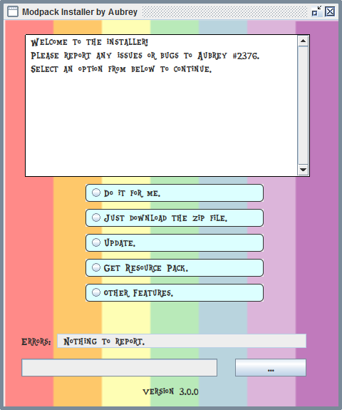

The modpack installer.
Ah yes. This. I spent around a month and a half overall, with a total combined time of a week working on this.
What is this and what does it do?
This is a neat little program I made that helps to install a modpack for a modded Minecraft server. It is made in Java, utilizing Swing as its GUI component.
Download it!
- Main Download: Amazon Server
- Mirror One: Google Drive
- Mirror Two: Github Project
Extract the zip file using Windows Explorer, 7Zip, or your favourite file archiving software
Last Github update for the installer: 11/17/2019
- For you security-oriented folks, here's your sums to verify the file!
- MD5: 163babfc72768b42f555b3fd26be2514
- SHA 1: BEA23BB23D5BE948646C9C32DD688B4714ECF0CF
- CRC 32: 4A4AFDFA
And finally, if desired, you can view, and even download the source code on Github here!
Here's what it looks like!
Resource pack
For the massive resource pack, please go here.
What all does it do?
This little thing has many features in it. I'm quite proud of all I packed into it.
- Automatic modpack installation.
- An option panel that allows the user to utilize specific aspects.
- It automatically backs up any pre-existing mods and config
- Automatic Forge and Minecraft detection, and if no Forge is found it tells you it is needed.
- Code is licensed under the WTFPL V2 allowing one to do what they wish with it.
- The ability to ping the server to see if it is up, saving the user from waiting 10 minutes loading Minecraft.
- If it cannot find the directories needed to install, it asks to be pointed to them
- A GUI slider option that allows memory allocation for Minecraft.
- Multiple "failsafes" so it should be hard to break.
- An option to restore the launcher settings if something goes wrong during allocation.
- Platform agnostic, so it should (in theory) run on Windows, Mac and Linux.
- The ability to download updates for the modpack too.
- A nice looking GUI with custom fonts.
- The ability to download one of many resource pack versions for the server!
- Custom error messages so if something does break, it breaks in style.
- And finally, over 2700 lines of Java code.
What's this WTFPL V2 you mentioned?
"This program is free software. It comes without any warranty, to the extent permitted by applicable law. You can redistribute it and/or modify it under the terms of the Do What The Fuck You Want To Public License, Version 2, as published by Sam Hocevar. See wtfpl.net for more details."
Prety much that, except with one addition. I ask that if you do modify or improve upon it to let me know. If I really like the improvements, I might add it in, with credit to you.